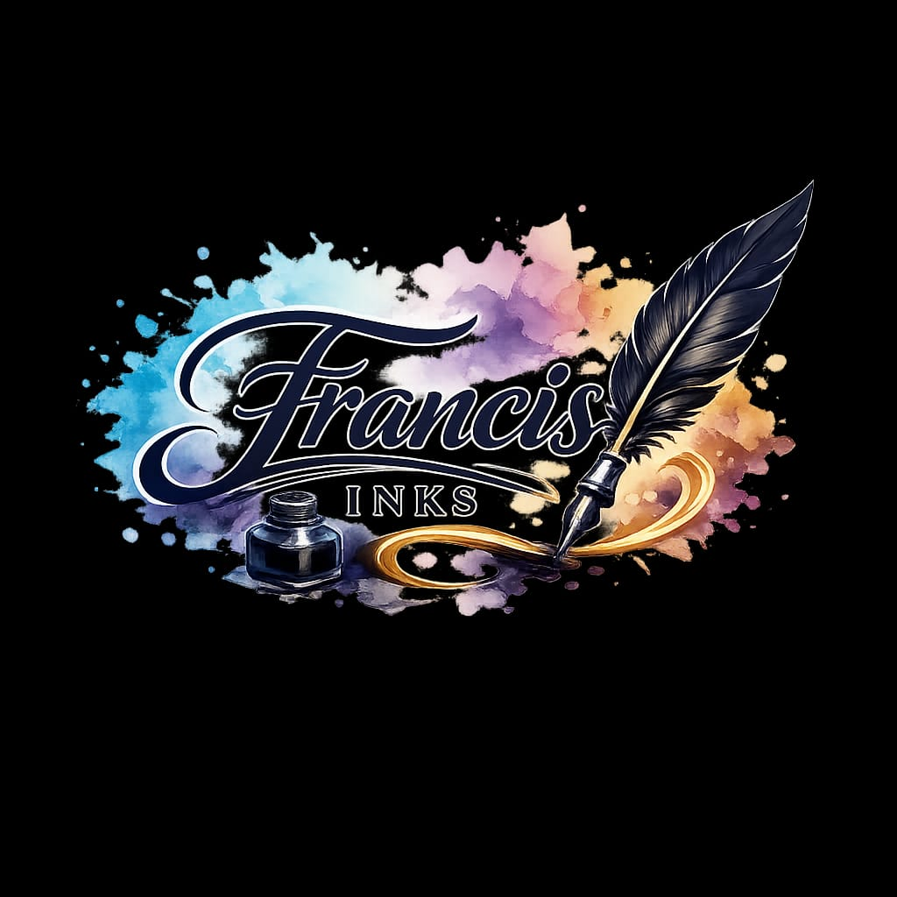
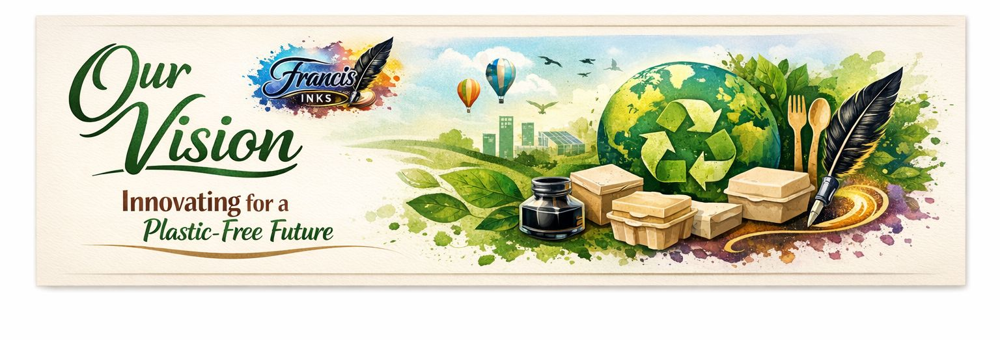
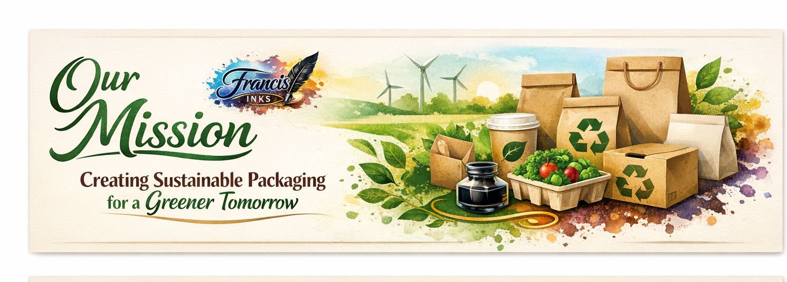

Welcome to Francis Inks
Francis Inks is an innovative startup based in Lesotho that focuses on transforming the packaging and printing industry through sustainable solutions. The company was created to address environmental challenges caused by plastic waste and harmful industrial inks.
Our approach combines eco-friendly materials with modern production techniques to deliver high-quality, environmentally responsible products.

Our Vision
To become a leading provider of biodegradable packaging and eco-friendly ink solutions across Africa and globally.

Our Mission
To deliver sustainable solutions that help businesses reduce their environmental footprint while maintaining efficiency and profitability.